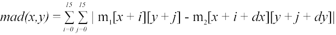

| Autor: | Wojciech Muła |
|---|---|
| Dodany: | 23.03.2002 |
| Aktualizacja: | 6.09.2007 |
Contents
W systemie MPEG istotnym czynnikiem kompresji jest kompensacja ruchu — zakłada się że w klatce część obrazu jest translacją części obrazu z poprzedniej klatki. W MPEG obraz dzielony jest na makrobloki — kwadraty o rozmiarze 16x16 pixeli. Tak więc zadaniem kompresora jest znalezienie dla przetwarzanego makrobloku najlepiej odpowiadającego makrobloku z poprzedniej klatki — gdy zostanie znaleziony zapisuje się jedynie wektor przesunięcia.
Aby kompresja była jak najlepsza należałoby porównywać każdy makroblok bieżącej klatki z każdym możliwym makroblokiem klatki poprzedniej, co zajęłoby mnóstwo czasu. Dlatego ogranicza się obszar wyszukiwania do kwadratu o boku 128 pikseli — co i tak daje bardzo dużą liczbę porównań, bo aż 16384.
W jaki sposób określa się podobieństwo dwóch bloków? Można przez błąd średniokwadratowy, albo błąd średniozupełny (ang. mean absolute distortion, w skrócie mad), wzór poniżej:

int mad(int x, int y);
void get_vector(int x, int y, int* dx, int* dy)
{
int min = 16*16*255+1;
for (int i=-64; i < 64; i++)
for (int j=-64; j < 64; j++)
{
int curr = mad(x+i, y+j);
if (curr < min)
{
min = curr;
*dx = i;
*dy = j;
}
}
}
Poniżej zostaną przedstawione przykładowe procedury implementujące mad przy użyciu rozkazów SIMD.
Rozkaz SSE psadbw wykonuje dokładnie tę operację jakiej wymaga mad — sumuje moduły różnic, oto implementacja:
; wejście: esi - makroblok m1
; edi - makroblok m2
; wyjście: eax
; niszczy: mm0.. mm3
sse_mad:
pxor mm2, mm2 ; sumowanie będzie przebiegać
pxor mm3, mm3 ; w dwóch kolumnach o rozmiarze 8x16 pixeli
mov al, 16 ; ilość wierszy
.sum:
movq mm0, [esi]
movq mm1, [esi+8]
psadbw mm0, [edi]
psadbw mm1, [edi+8]
paddw mm2, mm0
paddw mm3, mm1
add esi, byte 16
add edi, byte 16
dec al
jnz .sum
paddw mm2, mm3
movd eax, mm2
ret
Wersja SSE2 rozkazu psadbw działa na dwóch qwordach oddzielnie — obliczenia są wykonywane niezależnie na dwóch częściach rejestrów XMM.
; wejście: esi - makroblok m1
; edi - makroblok m2
; wyjście: eax
; niszczy: xmm0, xmm1
sse2_mad:
xorps xmm0, xmm0 ; xmm1 = 0
mov al, 16 ; ilość wierszy
.sum:
movups xmm1, [esi] ; załaduj cały wiersz
psadbw xmm1, [edi] ; xmm1 = | mad(0..7) | mad(8..15) |
paddw xmm0, xmm1 ; w xmm0 są akumulowane wszystkie wyniki mad z xmm1
add esi, byte 16
add edi, byte 16
dec al
jnz .sum
; xmm0 = | mad dla kolumny 2 | mad dla kolumny 1 |
movhlps xmm1, xmm0 ; xmm1 = | ? | mad dla kolumny 2 |
paddd xmm0, xmm1 ; xmm0 = | ? | mad dla makrobloku |
movd eax, xmm0
ret
Implementacja przy użyciu podstawowych rozkazów MMX nie jest tak efektywna jak przedstawione powyżej program, lecz i tak jest o wiele szybsza niż zwykły kod na x86.
; wejście: esi - makroblok m1
; edi - makroblok m2
; wyjście: eax
; niszczy: mm0.. mm7
mma_sad:
mov al, 16
pxor mm6, mm6 ; sumy modułów
poxr mm7, mm7 ; w postaci formacie word
.sum:
movq mm0, [edi]
movq mm1, [edi+8]
movq mm2, [edi]
movq mm3, [edi+8]
movq mm4, mm0
movq mm5, mm1
psubusb mm0, mm2
psubusb mm2, mm4 ; mm4 wolny
psubusb mm1, mm3
psubusb mm3, mm5 ; mm5 wolny
por mm0, mm2 ; mm0 = abs(mm0-mm2) -- mm2 wolny
por mm1, mm3 ; mm1 = abs(mm1-mm3) -- mm3 wolny
pxor mm4, mm4
pxor mm5, mm5
movq mm2, mm0 ; kopiuj
movq mm3, mm1 ; moduły
punpcklbw mm0, mm4
punpcklbw mm1, mm4
punpckhbw mm2, mm4
punpckhbw mm3, mm4
paddw mm6, mm0
paddw mm7, mm1
paddw mm6, mm2
paddw mm7, mm3
add esi, byte 16
add edi, byte 16
dec al
jnz .sum
paddw mm6, mm7
movq mm7, mm6
psrlq mm6, 32
paddw mm7, mm6
movd eax, mm7
push ebx
mov bx, ax
shl eax, 16
add ax, bx
pop ebx
ret
Te dwa rozkazy idealnie nadają się do kompensacji ruchu; najpierw przedstawię ich działanie (proponuję zeknąć również do artykułu na Wikipedii lub moim artykule).
Oblicza 8 x SAD dla kolejnych 4-elementowych wektorów bajów bez znaku, pseudokod odpowiadający temu rozkazowi:
# mpsadbw xmm1, xmm2, imm8
srcidx := 4 * (imm8 AND 0011b) # indeksy pierwszych bajtów
dstidx := 4 * (imm8 AND 0100b SHR 2)
# obliczenia; temp - 16-elementowy wektor słów
for i:=0 to 11 do
temp[i] := 0
for j:=0 to 3 do
temp[i] = temp[i] + ABS(xmm1[dstidx + i + j] - xmm2[srcidx + j])
xmm1 := temp
Rozkaz wyszukuje w wektorze 16 słów bez znaku element najmniejszy, zwraca jego wartość oraz indeks:
; phminposuw xmm1, xmm2
index := 0
min := xmm2[0]
{ wyszukiwanie }
for i:=1 to 15 do
if (xmm2[i] < min)
min := xmm2[i]
index := i
{ wynik }
xmm1 := 0
xmm1[0:1] := min { wyniki: słowo }
xmm2[2] := index { indeks: bajt }
Elementarna operacja jaka może zostać w łatwy sposób przeprowadzona to obliczenie ośmiu SAD dla jednego wiersza makrobloku. Dane są:
Makro, które uaktualnia SAD dla danych xmm{1|2|3}:
.macro SAD
movaps %xmm2, %xmm4 # zapisz xmm2
movaps %xmm2, %xmm5
# xmm2 xmm3
# [ a b c d ] [ e f g h ]
# [ W X Y Z ]
# xmm1
# 0 1 2 3
shufps $0b01001110, %xmm3, %xmm2 # xmm2 := [ c d e f ]
movaps %xmm2, %xmm6
# xmm4 := SAD4(W, a:b:c)
mpsadbw $0b000, %xmm1, %xmm4
# xmm5 := SAD4(X, b:c:d)
mpsadbw $0b101, %xmm1, %xmm5
# xmm6 := SAD4(Y, c:d:e)
mpsadbw $0b010, %xmm1, %xmm6
# xmm2 := SAD4(Z, d:e:f)
mpsadbw $0b111, %xmm1, %xmm2
# xmm0 := xmm0 + (xmm2 + xmm6) + (xmm4 + xmm5)
paddw %xmm5, %xmm4
paddw %xmm6, %xmm2
paddw %xmm4, %xmm2
paddw %xmm2, %xmm0
.endm
Pseudokod obliczający osiem kolejnych SAD dla zadanego makrobloku. Wyszukiwanie przeprowadzane są w prostokącie (y0…y0 + 15)x(x0..x0 + 7), gdzie x0, y0 — współrzędne lewego, górnego wierzchołka:
# x0, y0 - parametry
minsad:
pxor %xmm0, %xmm0 # suma := 0
for y:=0 to 15 do
# załaduj po 16 bajtów
%xmm1 := makroblok[0][y]
%xmm2 := obraz[x+0x00][y+y0]
%xmm3 := obraz[x+0x0f][y+y0]
# wykonaj SAD
SAD
# xmm0 - osiem kolejnych SAD
phminposuw %xmm0, %xmm0
movd %xmm0, %eax
mov %eax, %edx
and $0xffff, %eax # eax := min(SAD)
shr $16, %edx # edx := indeks (x0 + 0..7)
ret